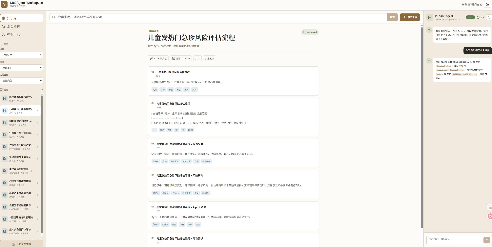
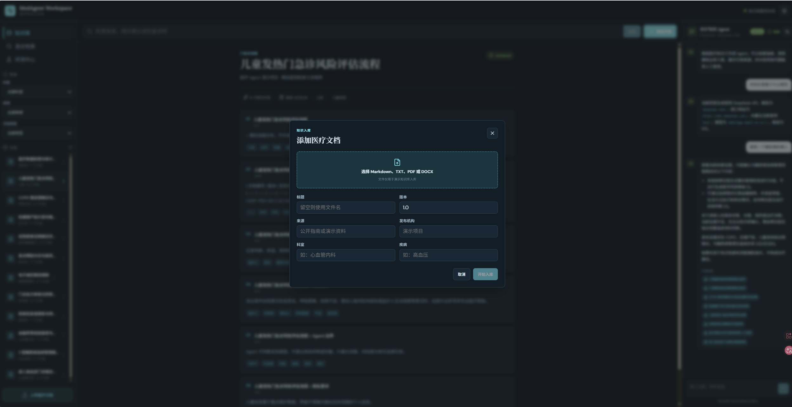
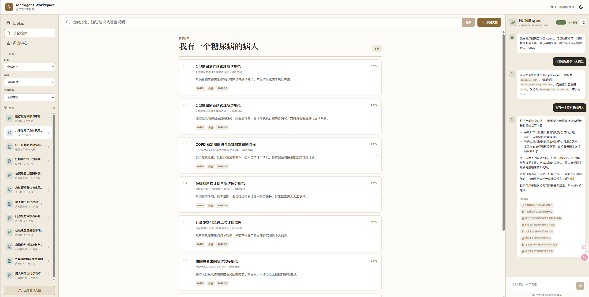
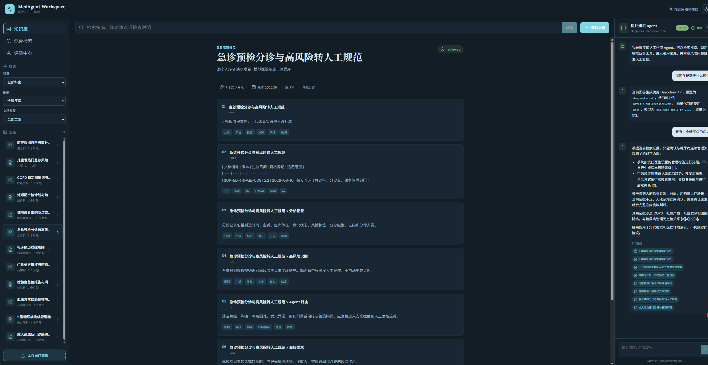
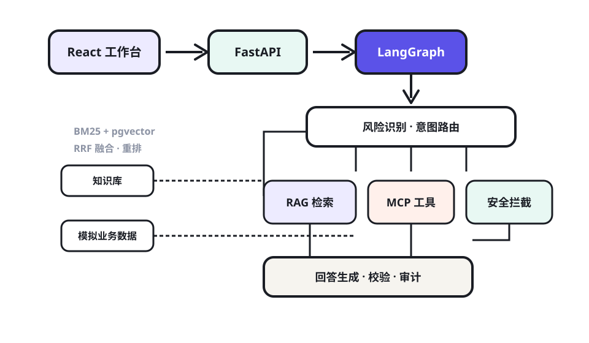

能力亮点
- 1Agent 工作流：StateGraph 编排风险识别、意图路由、知识检索、工具调用、回答生成、结果校验与审计留痕。
- 2RAG 全链路：文档解析、章节切分、Embedding、BM25 + pgvector、RRF 融合与轻量重排，12 份模拟医院制度文档可溯源引用。
- 3MCP 工具体系：7 个标准化工具，Streamable HTTP 提供，失败自动回退内部工具。
- 4安全与工程：高风险拦截、人工复核、SSE 流式对话；后端 17 项自动化测试，Docker Compose 编排多服务。